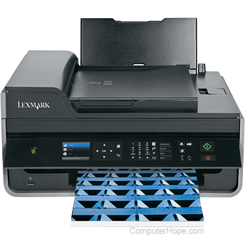
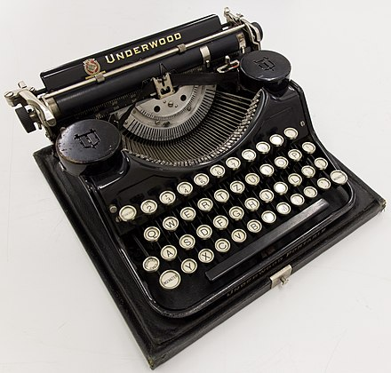

A Printer
In the field of computing, a printer is considered a peripheral device that serves the purpose of creating a permanent representation of text or graphics, usually on paper. While the majority of outputs produced by printers are readable by humans, there are instances where barcode printers have found a utility beyond this traditional use. Different types of printers are available for use including inkjet printers, thermal printers, laser printers, and 3D printers
A Television
Television (TV)) telecommunicating medium for transmitting moving images and sound. The term can refer to a television set, or the medium of television transmissions. Television is a mass medium for advertising, entertainment,news and sports. Television became available in crude experimental forms in the 1920s, but only after several years of further development was the new technology marketed to consumers. After World War II, an improved form of black-and-white television broadcasting became popular in the United Kingdom and the United States, and television sets became commonplace in homes, businesses, and institutions. During the 1950s, television was the primary medium for influencing public opinion. In the mid-1960s, color broadcasting was introduced in the U.S. and most other developed countries


A Typewriter
A typewriter is a mechanical or electromechanical machine for typing characters. Typically, a typewriter has an array of keys, and each one causes a different single character to be produced on paper by striking an inked ribbon selectively against the paper with a type element. At the end of the nineteenth century,the term 'typewriter' was also applied to a person who used such a device The first commercial typewriters were introduced in 1874, but did not become common in offices in the United States until after the mid-1880s. The typewriter quickly became an indispensable tool for practically all writing other than personal handwritten correspondence. It was widely used by professional writers, in offices, in business correspondence in private homes, and by students preparing written assignments.
A Laptop
A laptop computer or notebook computer, also known as a laptop or notebook, is a small, portable personal computer (PC). Most of the computer's internal hardware is fitted inside the lower lid enclosure under the keyboard, although many laptops have a built-in webcam at the top of the screen and some modern ones even feature a touch-screen display. In most cases, unlike tablet computers which run on mobile operating systems, laptops tend to run on desktop operating systems, which were originally developed for desktop computers. Laptops run on both an AC power supply and a rechargeable battery pack and can be folded shut for convenient storage and transportation, making them suitable for mobile use. Laptops are used in a variety of settings, such as at work (especially on business trips), in education, for playing games,web browsing, for personal multimedia, and for general home computer use.


Mobile Phones
A mobile phone (or cellphone) is a portable telephone that can make and receive calls over a radio frequency link while the user is moving within a telephone service area, as opposed to a fixed-location phone (landline phone). Modern mobile telephone services use a cellular network architecture and therefore mobile telephones are called cellphones. Mobile phones are considered an important human or technological invention as it has been one of the most widely used and sold pieces of consumer technology. The growth in popularity has been rapid in some places, for example in the UK the total number of mobileclass="" phones overtook the number of houses in 1999.Today, mobile phones are globally ubiquitous,and in almost half the world's countries, over 90% of the population own at least one.